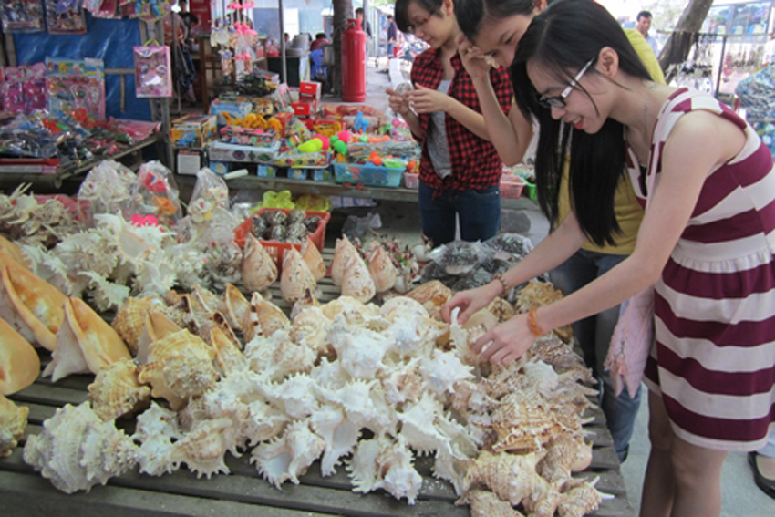
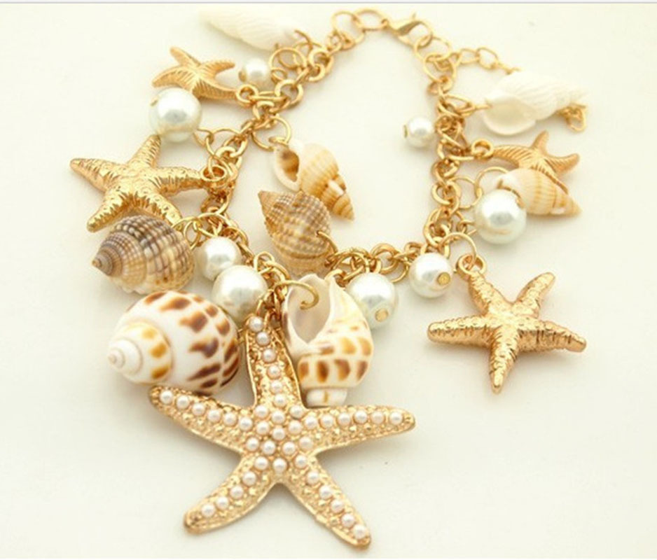
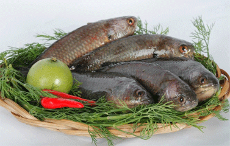
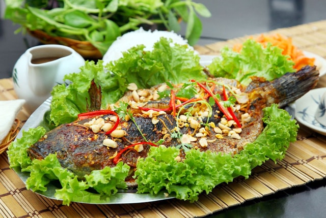
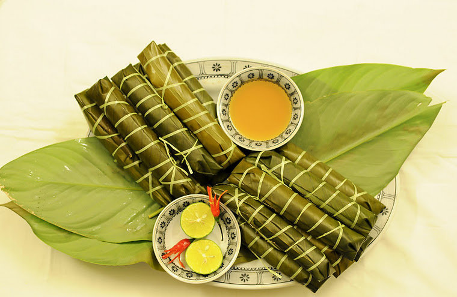
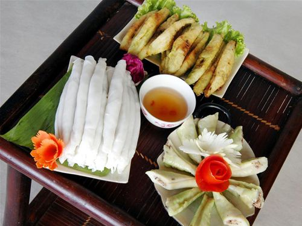
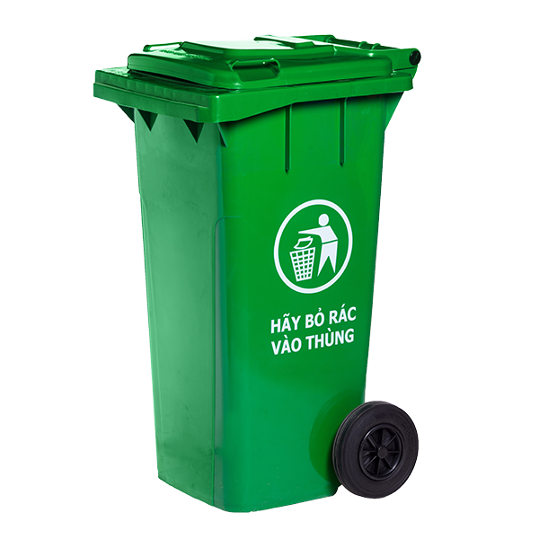
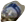
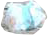
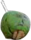

0984 231 097
0984 231 097 haukdpd02020@fpt.edu.vn
haukdpd02020@fpt.edu.vn

Villa Sam Son FLC SB19
Mở trong cửa sổ mới Sầm Sơn Featuring free WiFi, a spa centre and an outdoor pool, Villa Sam Son FLC SB19 offers pet-friendly accommodation in Sầm Sơn.Đặt phòng không cần thẻ tín dụng. Được đặt 7 lần trong vòng 24 giờ qua. Đặt phòng gần đây nhất: 1 giờ trước

CULINALY SAM SON
Những món ăn từ biển như: tôm, cua, ghẹ, bề bề, sam, mực, gỏi cá,… luôn làm các thực khách ngon miệng sau khi thưởng thức. Ngoài những món ăn đặc sản Sầm Sơn, tới đây thực khách còn được thưởng thức biết bao món ngon đặc sản Xứ Thanh.

Dragon Sea Hotel
Mở trong cửa sổ mới Khách sạn 4 saoSầm Sơn Với Wi-Fi miễn phí trong toàn khuôn viên, Gradon Sea Hotel cung cấp chỗ nghỉ tại thị trấn Sầm Sơn.Đặt phòng gần đây nhất: 8 Tháng 8

THIÊN ĐƯỜNG DU LỊCH
Du lịch Sầm Sơn 2017, Quý khách nên nghỉ dưỡng tại đâu, ăn những món ăn gì, đi chơi những địa điểm nào. Để chuẩn bị cho chuyến đi Sầm Sơn sắp tới cùng gia đình, bạn bè và người thân của mình.
Chi tiết
ĐẶC SẢN SẦM SƠN
Đến với Sầm Sơn, không chỉ được ngắm những danh lam thắng cảnh đẹp, được hòa mình cùng biển. Quý khách còn được thưởng thức các món ăn đặc sản Sầm Sơn với nét ẩm thực độc đáo.
Chi tiết
KHÁCH SẠN SẦM SƠN
Bạn có kế hoạch Sầm Sơn 2017, Website cung cấp hình ảnh, địa chỉ, giá phòng khách sạn ở Sầm Sơn, nhà nghỉ, nhà hàng được xếp từ hạng 1 sao đến 5 sao tại Thành phố Sầm Sơn.
Chi tiết
CẨM NANG DU LỊCH
-

Quà lưu niệm được làm từ các vỏ sò vỏ ốc độc đáo
 SAMSONTHMách bạn 6 món quà nên mua khi đi du lịch Sầm sơn
Sau khi đã được tận hưởng những ngày sảng khoái bên bờ biển Sầm Sơn tuyệt đẹp, sẽ có rất nhiều bạn băn khoăn không biết nên mua gì về làm quà cho gia đình và bạn bè ? Để giúp chuyến đi của các bạn thêm trọn vẹn chúng tôi xin gợi ý những món quà bạn nên mua về làm quà khi du lịch Sầm Sơn..
Xem ngay -

Đặc sản Cá rô đầm sét có nguồn gốc ở đâu?
 SAMSONTHThưởng thức món ăn đặc sản Cá rô đầm sét chốn quê
Được biết tới là món đặc sản của Xứ Thanh, Cá rô Đầm Sét lôi cuốn vị giác của khách du lịch bởi vị thơ ngon, béo béo, thanh mát của nó. Một trong những món được đưa vào thực đơn và không thể thiếu trong danh sách món ăn đặc sản Sầm Sơn được du khách tấm tắc khen.
Xem ngay -

Đặc sản Bánh răng bừa có nguồn gốc ở đâu?
 SAMSONTHBánh răng bừa đặc sản xứ Thanh đậm đà thơm ngon
Được gọi với cái tên Bánh răng bừa bởi hình dáng bên ngoài rất giống với một dụng cụ của người dân đó là chiếc răng bừa, bánh có hình dáng thon và dài. Hình ảnh hạt gạo là biểu tượng của nền văn minh lúa nước, là thức ăn nuôi sống người Việt Nam từ thửa xa xưa.
Xem ngay
DU LỊCH SẦM SƠN
33 comments



Hãy bỏ rác vào thùng
Sầm Sơn phát triển du lịch gắn với bảo vệ môi trường biển
Ngay trong năm 2016 này, thị xã Sầm Sơn đã tiến hành quy hoạch, xây dựng nhiều khu vực để xử lý lượng rác thải trung bình mỗi ngày khoàng 125 tấn, bên cạnh đó, thị xã cũng đã lắp đặt hoàn thiện hệ thống dẫn nước thải hợp qui chuẩn, nhất là nước thải từ khu vực sản xuất, chế biến thủy hải sản. Chính những biện pháp tích cực về bảo vệ môi trường sẽ góp phần để thị xã Sầm Sơn phấn đấu đạt mục tiêu đến năm 2020, đón được hơn 5 triệu lượt khách (trong đó khách quốc tế chiếm 40%); xây dựng Sầm Sơn thành đô thị du lịch xanh, sạch, đẹp, văn minh, hiện đại.